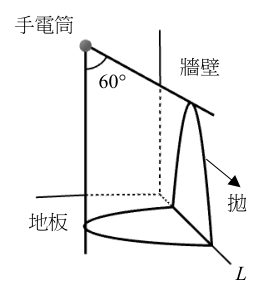
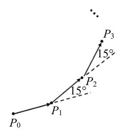
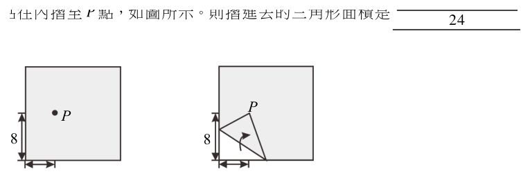

開卷有益 ／
學科能力測驗 ／ 數學B ／ 112 年112 年學科能力測驗數學B試題與答案
這一頁是民國 112 年學科能力測驗數學B的整份歷屆試題，共 20 題，題目與標準答案出自大考中心 學測歷年試題（依著作權法 §9，考試試題不受著作權保護），其中 20 題附有詳解。以下逐題列出題幹、選項與答案；要計時作答或記錄成績，請用線上練習。
線上作答這一科 →
全部 20 題
第 1 題
某抽水站發現其用電量（單位：度）與抽水馬達轉速（單位：rpm）的三次方成正比。根據上述，試問下列這五個圖中，哪一個最可以描述此抽水站的用電量 \(y\)（度）與抽水馬達轉速 \(x\)（rpm）的對應關係？
（A） 圖(1)：通過 (1,1) 後上凹遞增的曲線（B） 圖(2)：通過 (1,1) 的遞增直線（C） 圖(3)：通過 (1,1) 後上凸遞增的曲線（D） 圖(4)：先增後減再增的波動曲線（E） 圖(5)：先快速上升至峰值後遞減趨近 x 軸的曲線答案：（A）
詳解與考點 正解：用電量 y 與轉速 x 的三次方成正比，先設 y=kx³，其中 k＞0。轉速只能取 x≥0；當 x＞0 時，y'=3kx²＞0、y''=6kx＞0，所以圖形通過原點，且在正半軸持續遞增、凹向上。官方答案為 A；惟題幹只能推出 y=kx³，不能推出圖形必通過 (1,1)，因為代入 x=1 得 y=k，只有 k=1 時才通過 (1,1)。A 所示曲線的遞增且凹向上形態最符合上述判準。
B：遞增直線可寫成 y=kx，其斜率固定為 k；但三次正比的斜率是 y'=3kx²，會隨 x 增大，不符。
C：上凸遞增代表 x＞0 時二階導數小於 0；然而 y=kx³ 的 y''=6kx＞0，正負相反。
D：先增後減再增表示中途有區間滿足 y'＜0；但 y'=3kx²≥0，且 x＞0 時 y'＞0，不會下降。
E：先升至峰值後遞減，表示峰值後 y'＜0，並趨近 x 軸；但 y'=3kx²＞0，且 x→∞ 時 y=kx³→∞，兩項皆不符。
本題考點：三次正比函數——先寫成 y=kx³（k＞0），以 y'=3kx² 與 y''=6kx 判斷正半軸遞增且凹向上；函數圖形判準——比例常數 k 決定尺度，不能由「成正比」逕自認定 k=1。
第 2 題
考慮實數二階方陣 \( \begin{bmatrix} a & b \\ c & d \end{bmatrix} \)，若 \( \begin{bmatrix} 0 & 1 \\ 1 & 0 \end{bmatrix} \begin{bmatrix} a & b \\ c & d \end{bmatrix} \begin{bmatrix} 1 & 0 \\ 0 & -2 \end{bmatrix} = \begin{bmatrix} 3 & -4 \\ -9 & -7 \end{bmatrix} \)，則 \( c - 2b \) 的值為何？
（A） \( -11 \)（B） \( -4 \)（C） \( 1 \)（D） \( 10 \)（E） \( 11 \)答案：（B）
詳解與考點 正解：題幹給矩陣乘積，左乘矩陣會交換兩列，右乘對角矩陣會縮放各欄，因此先完成乘法，再逐格比對。令 M=[[a,b],[c,d]]。先算 [[0,1],[1,0]]M=[[c,d],[a,b]]；再算 [[c,d],[a,b]][[1,0],[0,-2]]=[[c,-2d],[a,-2b]]。與 [[3,-4],[-9,-7]] 比對，得 c=3、-2d=-4，所以 d=2；a=-9；-2b=-7，所以 b=7/2。代入 c-2b=3-2×(7/2)=3-7=-4，選 B。
A：若 c-2b=-11，在 c=3 下會有 3-2b=-11，解得 b=7；但矩陣比對給的是 b=7/2，數值不合，A 錯誤。
C：若 c-2b=1，在 c=3 下會有 3-2b=1，解得 b=1；但 b=7/2，數值不合，C 錯誤。
D：若把 -2b=-7 除以 -2 時誤留負號，會得 b=-7/2，再算 3-2×(-7/2)=3+7=10；正確應為 b=7/2，D 錯誤。
E：若 c-2b=11，在 c=3 下會有 3-2b=11，解得 b=-4；但 b=7/2，數值不合，E 錯誤。
本題考點：矩陣乘法——左乘 [[0,1],[1,0]] 會交換矩陣兩列，右乘對角矩陣 [[1,0],[0,-2]] 會將第二欄乘以 -2；分量比對——乘積矩陣相等時逐格解出未知數，再代入目標式驗算。
第 3 題
地面上有甲、乙兩大樓，已知甲的高度大於乙，且甲、乙兩大樓的水平距離為 150 公尺。某人從甲樓頂拉一條繩索到乙樓頂，並從甲樓頂測得乙樓頂的俯角為 \(22^\circ\)。假設該繩索被拉成直線，試問繩索的長度（單位：公尺）最接近下列哪個選項？（註：眼睛往下看目標物時，視線與水平線間的夾角稱為俯角）
（A） 150（B） \(150\sin 22^\circ\)（C） \(150\cos 22^\circ\)（D） \(\dfrac{150}{\cos 22^\circ}\)（E） \(\dfrac{150}{\sin 22^\circ}\)答案：（D）
詳解與考點 正解：甲樓頂看乙樓頂的俯角為 22°，繩索與水平線的夾角也是 22°；甲高於乙只說明此角為俯角，角度大小決定的是斜邊與水平邊的比值。水平距離 150 是直角三角形的鄰邊，繩索是斜邊，所以選用餘弦。cos 22°＝150／繩長；cos 22°約為 0.927；繩長＝150／0.927≈161.8＝150／cos 22°，故 D 為正解。
A：150 是水平鄰邊，不是斜邊；因為 cos 22°＜1，繩長＝150／cos 22°≈161.8＞150，所以繩長不可能是 150，A 錯誤。
B：150sin 22° 是以斜邊 150 計算對邊的形式，但 150 實為鄰邊；sin 22°約為 0.375，150sin 22°約為 56.3，甚至小於水平距離，B 錯誤。
C：150cos 22°同樣把 150 當成斜邊；cos 22°約為 0.927，150cos 22°約為 139.1，小於 150，不可能是斜邊長，C 錯誤。它看起來對，是因為餘弦確實與鄰邊有關，但本題已知的是鄰邊，應除以 cos 22°，不能乘以 cos 22°。
E：150sin 22°對應的關係是對邊＝斜邊×sin 22°；本題已知鄰邊而非對邊，且 150／sin 22°約為 400.3，並非由圖形關係求得，E 錯誤。
本題考點：俯角與直角三角形——俯角等於視線與水平線的夾角，先辨認水平距離為鄰邊、繩索為斜邊；三角比判準——已知鄰邊與斜邊時用 cosθ＝鄰邊／斜邊，再解出未知斜邊。
第 4 題
某校期中考試有 29 名考生，且成績均相異，統計後得到位於第 25、第 50、第 75 與第 95 百分位數的考生成績分別為 41、60、74 與 92 分。後來發現成績有誤需要調整分數，成績較高的前 15 名學生的分數應該要各加 5 分，其餘學生成績不變。假設調整後第 25、第 50、第 75 與第 95 百分位數的考生成績分別為 \(a\)、\(b\)、\(c\) 與 \(d\) 分，則數組 \((a,b,c,d)\) 為下列哪個選項？
（A） \((41, 60, 74, 92)\)（B） \((41, 60, 74, 97)\)（C） \((41, 65, 79, 97)\)（D） \((46, 65, 79, 92)\)（E） \((46, 65, 79, 97)\)答案：（C）
詳解與考點 正解：題幹關鍵是「成績較高的前 15 名」各加 5 分，必先用百分位數定位各成績所在名次，再判斷是否在第 15 至 29 名。29 筆成績由小到大排列，第 P 百分位數位置為 ⌈29P/100⌉。第 25 百分位：⌈29×25/100⌉=⌈7.25⌉=第 8 名，a=41。第 50 百分位：⌈29×50/100⌉=⌈14.5⌉=第 15 名，b=60+5=65。第 75 百分位：⌈29×75/100⌉=⌈21.75⌉=第 22 名，c=74+5=79。第 95 百分位：⌈29×95/100⌉=⌈27.55⌉=第 28 名，d=92+5=97。因此 (a,b,c,d)=(41,65,79,97)，C 為正解。
A：把第 15、22、28 名都當成未加分，錯在忽略高分前 15 名正是第 15 至 29 名。
B：第 28 名屬加分區，d 應為 92+5=97，不是 92。
D：第 8 名不在加分區，a 應為 41，不是 41+5=46。
E：同樣誤把第 8 名列入高分前 15 名，a 不應加 5。它看起來對，是因為容易把「前 15 名」誤解成由小到大排列的前 15 筆。
本題考點：百分位數定位——n 筆資料的第 P 百分位先算 ⌈nP/100⌉；名次變動判斷——先確認該位置是否落在受調整的名次區間，再代入原分數加減。
第 5 題
袋子裡有編號分別為 1, 2, …, 100 的 100 顆球，某甲從袋中隨機抽取一球，每顆球被抽到的機率均相等。試問在下列哪個選項的條件下，某甲抽到 7 號球的條件機率最大？
（A） 某甲抽到球的號碼是奇數（B） 某甲抽到球的號碼是質數（C） 某甲抽到球的號碼是 7 的倍數（D） 某甲抽到球的號碼不是 5 的倍數（E） 某甲抽到球的號碼小於 10答案：（E）
詳解與考點 正解：本題求 P（抽到 7 號球｜給定條件），因 1 至 100 號球等可能，且 7 號球都落在各選項條件中，所以選用條件機率＝條件內有利個數／條件內總個數；分子都為 1，只要比較各條件集合大小。E：小於 10 的球為 1、2、3、4、5、6、7、8、9，共 9 個，因此 P（7｜小於 10）＝1／9。
A：奇數為 1、3、5、⋯、99，共 50 個，且 7 是奇數，所以 P（7｜奇數）＝1／50。1／50＜1／9，A 錯誤。
B：1 至 100 的質數共有 25 個，7 為其中之一，所以 P（7｜質數）＝1／25。1／25＜1／9，B 錯誤。
C：1 至 100 的 7 倍數為 7、14、21、⋯、98，共 100÷7 取整數部分＝14 個，所以 P（7｜7 的倍數）＝1／14。1／14＜1／9，C 錯誤。
D：1 至 100 的 5 倍數有 5、10、15、⋯、100，共 100÷5＝20 個；不是 5 倍數的球有 100－20＝80 個，故 P（7｜不是 5 的倍數）＝1／80。1／80＜1／9，D 錯誤。
本題考點：等可能下的條件機率——P（A｜S）＝S 中屬於 A 的個數／S 的個數；固定有利事件判準——當 7 都符合各條件時，分子皆為 1，條件集合愈小，條件機率愈大。
第 6 題
某甲計算多項式 \( f(x)=x^3+ax^2+bx+c \) 除以 \( g(x)=ax^3+bx^2+cx+d \) 的餘式，其中 \( a, b, c, d \) 為實數，且 \( a \neq 0 \)。他誤看成 \( g(x) \) 除以 \( f(x) \)，計算後得出餘式為 \( -3x-17 \)。假設 \( f(x) \) 除以 \( g(x) \) 正確的餘式等於 \( px^2+qx+r \)，則 \( p \) 的值會等於下列哪個選項？
（A） \( -3 \)（B） \( -1 \)（C） \( 0 \)（D） \( 2 \)（E） \( 3 \)答案：（C）
詳解與考點 正解：本題先利用「誤算 g(x)÷f(x) 的餘式為一次式」找出係數關係，再以首項相除求正確 f(x)÷g(x) 餘式的 x² 係數。g(x)÷f(x) 時，首項商為 a，所以 g(x)-a f(x)=(b-a²)x²+(c-ab)x+(d-ac)。已知其餘式為 -3x-17，沒有 x² 項，故 b-a²=0，得到 b=a²。正確計算 f(x)÷g(x) 時，首項商為 1/a；f(x)-(1/a)g(x) 的 x² 係數為 a-b/a。代入 b=a²，得 p=a-a²/a=a-a=0。因此 C：0 為正解。
A：-3 是誤算所得餘式 -3x-17 的 x 係數，不是正確餘式的 x² 係數 p。
B：-1 並非由 b=a² 代入 a-b/a 所得的值。
D：2 並非由 a-a²/a 所得；此式中 a²/a=a，所以結果必為 0。
E：3 不能由題設推得；誤算餘式中的 -3 只對應 x 項係數。它看起來對，是因為 -3x-17 中出現 3，但題目問的是正確餘式的 x² 係數。
本題考點：多項式除法餘式——先以首項相除寫出相減後的餘式；餘式次數低於除式次數，已知為一次式時 x² 係數必為 0；係數判定——將 b=a² 代入 p=a-b/a，逐步化簡得 p=0。
第 7 題
已知某手電筒照射的光線為直圓錐狀，且光發散的夾角為 \(60^\circ\)，如圖所示。設牆壁與地板垂直且交界處為直線 \(L\)，將此手電筒以垂直於 \(L\) 的方向照射，即此直圓錐的軸與 \(L\) 垂直。若手電筒照射在牆壁上的光線邊緣為拋物線的一部份，則在地板上的光線邊緣為下列哪種圖形的一部份？

（A） 兩相交直線（B） 圓形（C） 拋物線（D） 長短軸不相等的橢圓（E） 雙曲線答案：（D）
詳解與考點 正解：本題以圓錐曲線的截面判別為方法；光錐發散夾角為 60°，半頂角 α＝60°÷2＝30°，再由牆面截得拋物線鎖定光軸方向。牆面為鉛直平面，既然其截痕為拋物線，牆面與光軸的夾角等於 α＝30°，亦即牆面平行於一條母線；因此光軸自水平方向向下傾斜 60°。地板是水平面，地板與光軸的夾角 β＝90°−30°＝60°。因 β＝60°＞α＝30°，地板斜切整個圓錐，截痕是橢圓；又光軸與地板並不垂直，橢圓不是圓，故 D 為正解。
A：兩相交直線是截平面通過圓錐頂點的退化情形；地板只斜切光錐、不通過頂點，A 錯誤。
B：圓形要求截平面垂直於光軸；本題地板與光軸夾角為 60°，不是 90°，B 錯誤。
C：拋物線要求截平面與光軸夾角 β＝α＝30°；地板的 β＝60°，C 錯誤。
E：雙曲線要求 β＜α，即截面比母線更陡並切到雙錐兩葉；本題 60°＞30°，E 錯誤。它看起來對，是因為若誤把光軸當作落在地板內，會得 β＝0°而誤判雙曲線；題幹的牆面拋物線正是用來排除這個誤讀。
本題考點：圓錐曲線截面——半頂角 α 與截平面、軸夾角 β 比較，β＞α 為橢圓、β＝α 為拋物線、β＜α 為雙曲線；圓的判準——截平面必須垂直於圓錐軸，否則橢圓長短軸不等。
第 8 題（多選）
某電子看板持續不斷的輪流播放 \(A\)、\(B\) 兩段廣告（\(A\)、\(B\)、\(A\)、\(B\)…），每個廣告播放時間皆為 \(T\) 分鐘（其中 \(T\) 為整數）。某甲經過時剛好開始播放 \(A\) 廣告，30 分鐘後，某甲回到該處，看到恰好開始播放 \(B\) 廣告。試選出可能是 \(T\) 值的選項。
（A） 15（B） 10（C） 8（D） 6（E） 5答案：（B）（D）
詳解與考點 正解：廣告依 A、B 交替，每段長 T 分鐘；從 A 剛開始到 B 剛開始，經過的廣告段數必須是奇數。因此 30=(2k+1)T，其中 2k+1 為正奇數。B：T=10 時，30÷10=3，3 是奇數，30=3T，30 分鐘後恰在 B 開始，正確。D：T=6 時，30÷6=5，5 是奇數，30=5T，30 分鐘後也恰在 B 開始，正確。
A：T=15 時，30÷15=2，2 是偶數；經過 A、B 兩段後會回到 A 開始，不是 B 開始。
C：T=8 時，30÷8=3.75，不是整數，30 分鐘時落在某段廣告播放中，不能恰好開始播放 B。
E：T=5 時，30÷5=6，6 是偶數，會回到 A 開始，不是 B 開始。
本題考點：週期與交替——A、B 各播 T 分鐘，完整週期為 2T；邊界判定——從 A 開始到 B 開始需經過奇數個 T，故檢驗 30／T 是否為正奇數。
第 9 題（多選）
已知 \(a=6\)、\(b=\dfrac{20}{3}\)、\(c=2\sqrt{10}\) 和 \(d\)，且 \(d\) 為有理數，將這四個數標註在數線上，即 \(A(a)\)、\(B(b)\)、\(C(c)\) 和 \(D(d)\)。試選出正確的選項。
（A） \(a+b+c+d\) 必為一個有理數（B） \(abcd\) 必為一個無理數（C） 點 \(D\) 有可能與點 \(C\) 的距離等於 \(2\sqrt{10}+6\)（D） 點 \(A\) 和點 \(B\) 的中點位在點 \(C\) 的右邊（E） 數線上和點 \(B\) 距離小於 8 的所有點中，正整數有 14 個，負整數有 1 個答案：（C）（D）（E）
詳解與考點 正解：已知 d 為有理數而 c=2√10 為無理數，題眼是數線距離、中點與開區間內整數個數，故分別用絕對值、中點公式及不等式。C：令 d=-6，則 |d-c|=|-6-2√10|=6+2√10=2√10+6，且 -6 是有理數，故 C 正確。D：A、B 的中點=(6+20/3)/2=(18/3+20/3)/2=(38/3)/2=19/3≈6.333；C 點座標=2√10=√40≈6.325，所以 19/3>2√10，中點在 C 的右邊，D 正確。E：與 B 的距離小於 8，即 |x-20/3|<8，得 20/3-8<x<20/3+8，即 -4/3<x<44/3；正整數為 1 到 14，共 14 個，負整數只有 -1，共 1 個，E 正確。
A：a+b+c+d=6+20/3+2√10+d=38/3+d+2√10；38/3+d 為有理數，加上無理數 2√10 仍為無理數，不必為有理數。
B：abcd=6·20/3·2√10·d=80√10·d。若 d=0，則 abcd=0，是有理數，所以不「必為」無理數。
本題考點：無理數運算——有理數加無理數為無理數，乘積含無理數時要檢查有理因子是否可為 0；數線距離——用 |x-y| 建式並找符合條件的有理座標；開區間整數計數——先解不等式，再逐一確認端點間的整數。
第 10 題（多選）
某機構在 12 點時將兩種不同的營養劑分別投入培養皿甲與培養皿乙中，此時甲、乙的細菌數量分別為 \(X\)、\(Y\)。已知甲的數量每 3 小時成長為原來的 2 倍，例如 15 點時甲的數量為 \(2X\)。乙的數量每 2 小時成長為原來的 2 倍，例如 14 點時乙的數量為 \(2Y\)、16 點時乙的數量為 \(4Y\)，測量所得結果部分記錄於下表。該機構在 18 點時測量發現甲、乙的數量相同，欲以細菌數量隨時間呈指數成長的模型來預估甲、乙 12 點至 24 點的細菌數量。根據上述，試選出正確的選項。
甲、乙細菌數量隨時刻變化部分紀錄 時刻（點） 12 13 14 15 16 17 18 19 20 21 22 23 24 甲數量 X 2X 乙數量 Y 2Y 4Y
（A） \(X > Y\)（B） 在 13 點時，甲的數量為 \(\frac{4}{3}X\)（C） 在 15 點時，乙的數量為 \(3Y\)（D） 在 19 點時，乙的數量為甲的 1.5 倍（E） 在 24 點時，乙的數量為甲的 2 倍答案：（A）（E）
詳解與考點 正解：題幹明示甲每 3 小時、乙每 2 小時皆變為 2 倍，且 18 點兩者相同；因此先以指數模型和 18 點條件求 X、Y 的關係。設 t 為 12 點起算的小時數，甲的數量為 X×2^(t/3)，乙的數量為 Y×2^(t/2)。18 點時 t=6，甲為 X×2^(6/3)=X×2^2=4X，乙為 Y×2^(6/2)=Y×2^3=8Y。由 4X=8Y 得 X=2Y。A：X=2Y>Y，正確。E：24 點時 t=12，甲為 X×2^(12/3)=16X；乙為 Y×2^(12/2)=64Y=64×(X/2)=32X，所以乙／甲=32X／16X=2，乙為甲的 2 倍，正確。
B：13 點時 t=1，甲為 X×2^(1/3)，不是 X×4/3；把 3 小時倍增誤當成每小時線性增加 1/3 倍，才會得到 4X/3。
C：15 點時 t=3，乙為 Y×2^(3/2)=Y×√8=2√2Y≈2.83Y，不是 3Y。
D：19 點時 t=7，乙／甲=[Y×2^(7/2)]／[X×2^(7/3)]。代入 X=2Y，得乙／甲=2^(7/2-7/3-1)=2^(1/6)≈1.12，不是 1.5。
本題考點：指數成長模型——每 k 小時變為 2 倍，數量寫成初值×2^(t/k)；同時刻相等——先代入共同時刻建立初值關係，再求其他時刻；分數次方——非整數小時仍須保留 2 的分數次方，不可用線性內插。
第 11 題（多選）
坐標平面上有一圓，其圓心為 \(A(a,b)\)，且此圓與兩坐標軸皆相切，另有一點 \(P(c,c)\)，其中 \(a>c>0\)，且已知 \(\overline{PA}=a+c\)，試選出正確的選項。
（A） \(a=b\)（B） 點 \(P\) 位於直線 \(x+y=0\) 上（C） 點 \(P\) 在此圓內（D） \(\dfrac{a+c}{b-c}=\sqrt{2}\)（E） \(\dfrac{a}{c}=2+3\sqrt{2}\)答案：（A）（D）
詳解與考點 正解：圓心 A(a,b) 與兩座標軸都相切，且 a>c>0、P(c,c)，應先以「圓心到兩軸的距離都等於半徑」列出 b 的可能，再用距離公式處理 PA=a+c。圓與 y 軸相切，半徑 r=|a|=a；與 x 軸相切，所以 |b|=a，即 b=a 或 b=-a。若 b=-a，PA²=(a-c)²+(-a-c)²=2a²+2c²；又 PA=a+c，所以 PA²=(a+c)²=a²+2ac+c²，兩式相等會得 (a-c)²=0，與 a>c 矛盾，故 b=a。A：a=b，故 A 正確。再由 PA²=(a-c)²+(b-c)²=2(a-c)²，且 PA=a+c，得 2(a-c)²=(a+c)²。因 a>c>0，兩邊開根號得 √2(a-c)=a+c。D：(a+c)/(b-c)=(a+c)/(a-c)=√2，故 D 正確。
B：P(c,c) 在直線 x+y=0 上須滿足 c+c=0，即 2c=0；但 c>0，故 P 不在該直線上，B 錯誤。
C：圓半徑 r=a，而 PA=a+c；因 c>0，所以 PA=a+c>a=r，P 在圓外，不在圓內，C 錯誤。它看起來對，是因為 P 的兩座標都小於圓心座標，但圓內外須比較點到圓心的距離與半徑，不能只比較座標大小。
E：由 √2(a-c)=a+c，整理為 (√2-1)a=(√2+1)c，所以 a/c=(√2+1)/(√2-1)。分子分母同乘 √2+1，得 a/c=(√2+1)²/(2-1)=3+2√2，不是 2+3√2，E 錯誤。
本題考點：圓與座標軸相切——圓心到每條相切座標軸的距離皆等於半徑，先列出座標正負的可能再以題設距離排除；兩點距離——先平方代入，再依正值條件開根號；圓內外判準——點到圓心距離小於、等於、大於半徑時，分別在圓內、圓上、圓外。
第 12 題（多選）
在球心為 O 的球形地球儀上，有 A、B、C、D、E 五個點，其中 A、B、C 三點都在赤道上，且經度分別為東經 0°、60° 和 90°；D、E 兩點都在北緯 30° 線上，且經度分別為東經 0°、180°。試選出正確的選項。
（A） 赤道的長度等於東經 0° 和 180° 這兩條經線長度的總和（B） 北緯 45° 線的長度等於赤道長度的 \( \dfrac{1}{2} \)（C） 「由 A 沿赤道移動到 B 的最短路徑長」等於「由 D 沿東經 0° 經線移動到北極點的路徑長」（D） 「由 D 沿北緯 30° 線移動到 E 的路徑長」等於「由 D 沿東經 0° 經線移動到北極點，再由北極點沿東經 180° 經線移動到 E 的路徑長的總和」（E） 通過北極點與 A 點的直線與通過北極點與 C 點的直線互相垂直答案：（A）（C）
詳解與考點 正解：球面弧長以「圓心角占整圓的比例×所在圓周長」計算；先設球半徑為 R，再分別比較赤道、經線與緯線的弧長。A：赤道長為 2πR；一條經線是大圓的一半，長為 πR，東經 0° 與 180° 兩條經線合計 πR+πR=2πR，等於赤道長，故 A 正確。C：A 到 B 的經度差為 60°，沿赤道的最短弧長為 (60/360)×2πR=πR/3；D 在北緯 30°，沿東經 0° 到北極的緯度差為 90°-30°=60°，沿經線弧長為 (60/360)×2πR=πR/3，兩者相等，故 C 正確。
B：北緯 45° 線的半徑為 Rcos45°=R√2/2，圓周長為 2π×(R√2/2)=πR√2；赤道長為 2πR，所以比值為 πR√2/(2πR)=√2/2=1/√2，不是 1/2，B 錯誤。
D：北緯 30° 線半徑為 Rcos30°=R√3/2，D 到 E 沿該緯線半圈的長度為 π×(R√3/2)=πR√3/2≈2.72R；D 經北極到 E 的兩段經線路徑各為 πR/3，總長為 πR/3+πR/3=2πR/3≈2.09R，兩者不相等，D 錯誤。它看起來對，是因為兩條路徑都跨越 180° 經度，卻分別走小圓緯線與大圓經線，半徑不同。
E：通過北極點與 A 點、通過北極點與 C 點的兩直線方向向量內積為 R²≠0，不垂直，E 錯誤。
本題考點：球面弧長——先辨認路徑所在圓，經線與赤道屬半徑 R 的大圓，緯線半徑為 Rcos（緯度）；弧長比較——以圓心角比例乘圓周長，角度相同不代表弧長相同；垂直判準——兩直線方向向量內積為 0 才互相垂直。
第 13 題
有兩個正實數 \(a\)、\(b\)，已知 \(ab^2 = 10^5\)，\(a^2 b = 10^3\)，則 \(\log b = \underline{\quad}\)。（化為最簡分數）
標準答案未收錄
詳解與考點 參考方向：取常用對數，令 x=log a、y=log b。由 ab²=10⁵ 得 x+2y=5；由 a²b=10³ 得 2x+y=3。兩式相減 (x+2y)−(2x+y)=5−3 得 −x+y=2，相加 3x+3y=8 得 x+y=8/3。聯立解出 y=log b=7/3。故 log b=7/3（最簡分數）。此為 AI 整理之解題方向，非官方標準答案，須對照官方評分原則。
第 14 題
從 1 到 20 的 20 個整數中，取出相異的 3 個數 \(a\)、\(b\)、\(c\)，使其成為等差數列，且 \(a < b < c\)，則 \((a, b, c)\) 的取法有 (14-1) (14-2) 種。
標準答案未收錄
詳解與考點 參考方向：取相異 a<b<c 成等差，設公差 d≥1，則 b=a+d、c=a+2d，需 c=a+2d≤20。對固定 d，a 可取 1 到 20−2d，共 20−2d 種（需 ≥1，故 d=1~9）。總數 =Σ_{d=1}^{9}(20−2d)=18+16+14+…+2=2(9+8+…+1)=2×45=90 種。故 (a,b,c) 取法為 90 種。此為 AI 整理之解題方向，非官方標準答案，須對照官方評分原則。
第 15 題
如圖所示，平面上有一點 \(P_0\) 先朝某方向前進 2 個單位長到達點 \(P_1\) 後，依前進方向左轉 15 度；朝新方向前進 2 個單位長到達點 \(P_2\) 後，然後再依前進方向左轉 15 度；再朝新方向前進 2 個單位長到達點 \(P_3\) 後，⋯依此類推。則向量 \(\overrightarrow{P_2P_3}\) 與 \(\overrightarrow{P_5P_6}\) 的內積為 (15-1)\(\sqrt{\text{(15-2)}}\)。（化為最簡根式）

本題選項為上圖中的 A／B／C／D，請對照圖片作答。
標準答案未收錄
詳解與考點 參考方向：每段長皆為 2，方向每段左轉 15°。向量 P₂P₃ 為第 3 段、P₅P₆ 為第 6 段，兩者方向相差 3 個 15°，即 45°。內積 =|P₂P₃||P₅P₆|cos45°=2×2×(√2/2)=2√2=√8。化最簡根式為 2√2（即 (15-1)=2、(15-2)=2，內積 =2√2）。此為 AI 整理之解題方向，非官方標準答案，須對照官方評分原則。
第 16 題
正方形紙張上有一點 P，P 點距離紙張左邊界 6 公分，距離下邊界 8 公分。今將紙張的左下角 O 點往內摺至 P 點，如圖所示。則摺進去的三角形面積是 \(\dfrac{\boxed{\text{16-1}}\,\boxed{\text{16-2}}\,\boxed{\text{16-3}}}{24}\) 平方公分。

本題選項為上圖中的 A／B／C／D，請對照圖片作答。
標準答案未收錄
詳解與考點 參考方向：設左下角 O=(0,0)、P=(6,8)。將 O 摺至 P，摺線為線段 OP 的中垂線。OP 中點 (3,4)、OP 斜率 4/3，中垂線斜率 −3/4，方程式 y−4=−(3/4)(x−3)。與下邊界 y=0 交於 x=25/3，與左邊界 x=0 交於 y=25/4。摺進去的三角形頂點為 O(0,0)、(25/3,0)、(0,25/4)，面積 =½×(25/3)×(25/4)=625/24 平方公分（即 (16-1)(16-2)(16-3)=625，分母 24）。此為 AI 整理之解題方向，非官方標準答案，須對照官方評分原則。
第 17 題
考慮所有只用0, 1, 2 三種數字組成的序列，序列長度n 是指該序列由n 個數字組成（可 重複出現）。令( ) a n 為在所有長度n 的序列中連續兩個零（即00）出現的次數總和。 例如長度3 的序列中含有連續兩個零的有000，001，0
標準答案未收錄
詳解與考點 考點：計數的「貢獻法」。長度 5、每位 0/1/2 共 3 種。依連續 00 的起始位置 i（可為 1、2、3、4）分別計：固定第 i、i+1 位為 00，其餘 3 位自由有 3^3=27 種。4 個位置合計 a(5)=4×27=108。用公式 a(n)=(n−1)·3^{n−2} 驗證，a(3)=2×3=6 與題例相符。答案為 108。
第 18 題
若向量 = k PA1 。（化為最簡分數）（選填題，3 分） ○ 18-2
標準答案未收錄
詳解與考點 單點透視題組。底座線 L：x+3y=0、頂端線 M：2x−3y+9=0，A₁(0,0)、B₁(0,3)，消失點 P 為兩線交點得 P(−3,1)。由 A₃B₃=2·A₁B₁=6，A₃ 在 L、B₃ 在 M 且同 x，解得 A₃(3,−1)。A₁、A₃、P 共線，PA₁=(3,−1)、PA₃=(6,−2)=2·PA₁，故 k=1/2。此為 AI 整理之方向，非官方標準答案，須對照官方評分原則。
第 19 題
試求 \( P \) 與 \( B_3 \) 這兩點的坐標。（非選擇題，6 分）
標準答案未收錄
詳解與考點 P 為消失點，即 L：x+3y=0 與 M：2x−3y+9=0 的交點，兩式相加得 3x+9=0，x=−3、y=1，故 P(−3,1)。求 B₃：A₃B₃=2·A₁B₁=6，桿與 y 軸平行，A₃ 在 L、B₃ 在 M 且同 x=t，鉛直長 (2t+9)/3−(−t/3)=t+3=6，得 t=3，故 B₃(3,5)。此為 AI 整理之解題方向，非官方標準答案，須對照官方評分原則。
第 20 題
若有隻蜜蜂恰好停在中間那根電線桿上距離底座與頂端的長度比為1：2 的位置上。某 A B 上畫出這隻蜜蜂，假設畫布上蜜蜂位置為Q 點，即點Q 到線 甲想在這個畫布的線段 2 2 B 的長度比為1：2，試求Q 點坐標。（非選擇題， A B 的底
標準答案未收錄
詳解與考點 先定 A₂、B₂：由透視性質「A₁B₃ 與 A₃B₁ 的交點落在 A₂B₂ 上」，以 A₁(0,0)、B₃(3,5)、A₃(3,−1)、B₁(0,3) 求對角線交點得 x=1，故 A₂(1,−1/3)、B₂(1,11/3)。Q 在 A₂B₂ 上且 A₂Q:QB₂=1:2，Q=A₂+(1/3)(B₂−A₂)=(1,1)。此為 AI 整理之方向，非官方標準答案，須對照官方評分原則。
其他年度
回到學科能力測驗數學B的年度總覽 ，
或到學科能力測驗題庫首頁 看其他科目。
題目與標準答案出自大考中心 學測歷年試題（依著作權法 §9，考試試題不受著作權保護）。依中華民國《著作權法》第 9 條第 1 項第 5 款，
依法令舉行之各類考試試題不得為著作權之標的，得自由利用。詳解為 AI 整理的學習輔助，
並非官方標準答案 ；中華民國會修訂，引用前請對照現行版本查證。